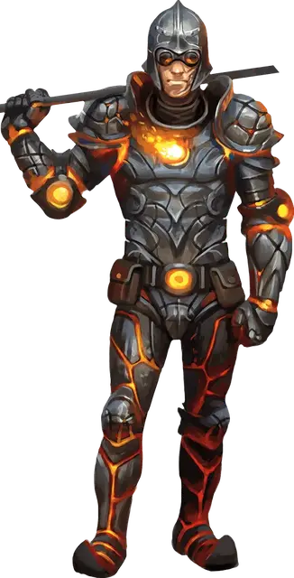

Разербласт
Razerblast
Средний Гуманоид (Человек), хаотично-злой

Класс Доспеха 17 (наборный доспех)
Хиты 112 (15к8 + 75)
Скорость 30 футов
| мод | спас | ||
|---|---|---|---|
| СИЛ | 16 | +3 | +3 |
| ЛОВ | 11 | +0 | +0 |
| ТЕЛ | 16 | +3 | +3 |
| мод | спас | ||
|---|---|---|---|
| ИНТ | 9 | −1 | −1 |
| МДР | 10 | +0 | +0 |
| ХАР | 13 | +1 | +1 |
Навыки Восприятие +3, Запугивание +4
Иммунитет к урону огонь
Чувства пассивное Восприятие 13
Языки Общий, Игнан
Опасность 5 (1800 опыта)
Бонус мастерства +3
Особенности
Осколочный взрыв. Когда хиты разербласта опускаются до 0, огненный шар в его груди взрывается, разрушая его тело, а осколки его доспехов разлетаются во все стороны, поражая всех вокруг. Существа, оказавшиеся в пределах 10 футов от разербласта в момент взрыва, должны совершить спасбросок Ловкости Сл 12, получая колющий урон 21 (6к6) при провале или половину этого урона при успехе.
Обжигающие доспехи. Доспехи разербласта раскалены. Любое существо, которое схватило разербласта, или которое схватил он сам, получает урон огнём 5 (1к10) в конце хода этого существа.
Действия
Мультиатака. Разербласт совершает три рукопашные атаки.
Копьё. Рукопашная или дальнобойная атака оружием: +6 к попаданию, досягаемость 5 фт. или дистанция 20/60 фт., одна цель. Попадание: колющий урон 6 (1к6 + 3) или колющий урон 7 (1к8 + 3) при использовании оружия двумя руками в рукопашной атаке, плюс урон огнём 3 (1к6).
Описание
Разербласт бурлит ненавистью к врагам культа огня. Элементальные повелители разербласта заменили его сердце огненным шаром, который взорвётся, если разербласт умрёт.
Разербласты практически не помнят своей жизни до того, как сила элементального огня изменила их. Если яростное пламя или один из лидеров культа прикажет им вступить в бой, то они выполнят приказ без раздумий, поскольку знают: даже если они проиграют, то погибнут в ослепительном блеске славы.